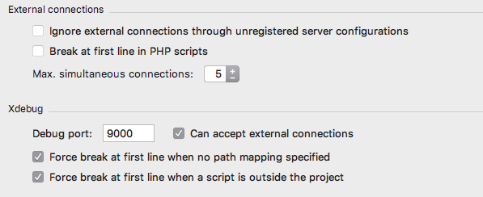
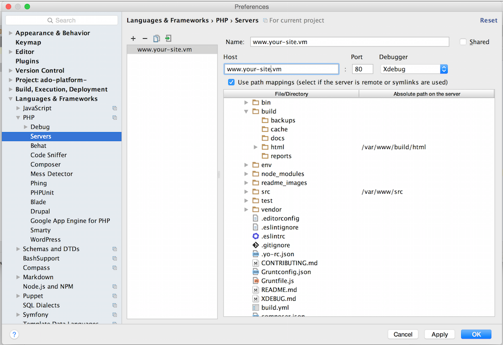
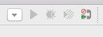
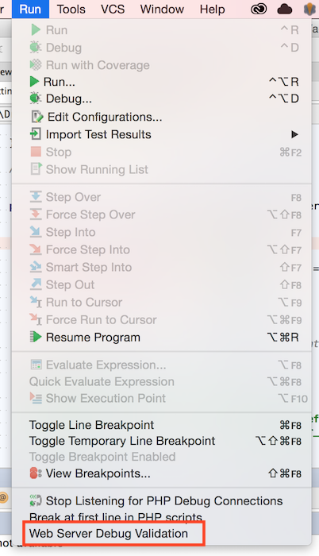

Using Xdebug with Outrigger
Getting Xdebug set up can be a bit challenging but while there are many discrete steps, they are individually straightforward. This guide will walk you through getting setup quickly.
Examples below are with PhpStorm. Other IDEs should have similar steps and required configuration.
Applies to use of the Outrigger Docker Images
This documentation specifically pertains to using the Apache-PHP Image or the Build Image.
rig itself is only relevant in that it brokers standardized DNS practices.
Make sure your environment is up-to-date
Consider updating rig before proceeding.
Once done, run rig doctor to confirm Outrigger is healthy. Check out Troubleshooting
or the F.A.Q. if anything comes up.
If you haven't updated your Docker Images recently, doing so now is a good precautionary step to ensure you have versions that work with this documentation. Check out Routine Image Maintenance if you need a guide to updating.
Conceptual Requirements
This section details the end configuration needs for Xdebug and connection between the containers and your IDE.
For both browser and CLI debugging your IDE needs to be configured to listen for the Xdebug connection and map paths of files as they appear in the container to how they appear to your IDE. Xdebug needs to be enabled and configured so that it knows how to talk to your IDE.
If you are familiar with normal Xdebug setup, there are common steps which may be omitted. Specifically, there is no need to trigger the start of the debugger through query parameters, POST parameters, cookies or environmental variables. Containers are set to autostart debugging so as long as your IDE is listening debugging should begin automatically.
Debugging Overhead
The overhead from the attempted connection by Xdebug to your IDE is typically nominal. If you
want to avoid it you can disable Xdebug by setting the PHP_XDEBUG environmental variable to
"false". To allow debugging only when requested, override the PHP setting for
xdebug.remote_autostart to disable the automatic connection.
Browser-based Debugging
For browser-based debugging ensure that your browser is connecting directly to the Apache-PHP container. This is because the IP address of the connection is used to connect back to your IDE. Chaining requests through intermediate containers like Varnish will result in the incorrect IP address getting used to attempt the connection to your IDE.
Setup Steps
The following section demonstrates required IDE configuration using PhpStorm. Other IDEs should have similar configuration options. The beginning of each section details the desired result of the configuration options.
PhpStorm Configuration
Adjust the Project's Debug Settings
The first step is to configure your IDE to listen on the right port for connections from Xdebug, accept those connection attempts and control interactions with the debugger.
Open your project's settings and go to Languages & Frameworks -> PHP -> Debug. You can get to the project settings by going to: PhpStorm > Preferences (OS X) or File > Settings (Windows, Linux).

Required Settings
- Debug port should be set to 9000.
- Can accept external connections should be enabled.
- Max. simultaneous connections: should be set greater than 1 to facilitate handling multiple requests at once. Command line debugging when using Drush usually requires multiple connections.
Recommended Settings
- Ignore external connections through unregistered server configurations should be unselected to ease setup. When unselected, PhpStorm will prompt about connections with unrecognized configurations which can help troubleshoot configuration mistakes.
- Break at first line in PHP scripts can be set as desired. Without this checked, you will need to set breakpoints in your code.
- Force break at first line ... options should be selected to ease identification of missing configuration requirements.
Set Up A Server Configuration for the Project
The next step is to configure your IDE to translate between the paths for files it can see to the paths as they appear in the container to Xdebug.
In your project's settings, go to Languages & Frameworks -> PHP -> Servers.
Create a new Server by clicking on the "+" button. Give your server a name and input the hostname of your container. It is recommended that you use the hostname as the server name. It will ease CLI debugging later.
Be sure to add the docroot mappings. The example shown here is using the
Grunt Drupal Tasks project structure. There are two mappings in this
case. One for the docroot (build/html) and the other for the src directory so that breakpoints can be set in the
custom modules in the src directory as well.
These mappings are used to match paths from inside the Docker container to the paths used in the local filesystem where PhpStorm is run.

Ensure That You IDE is Listening for Connections
Set PhpStorm to listen for connections using the Run menu or hitting the listen button in the toolbar. It's the one that looks like a telephone.

DBGp Proxy
DBGp Proxy settings are not used when debugging Outrigger containers.
Container Configuration
Set the environmental variable PHP_XDEBUG to "true" for your container. If using a Docker Compose
configuration file the setting will look something like the following:
www:
image: outrigger/apache-php:php71
...
environment:
PHP_XDEBUG: "true"
...
For debugging via the command line, also set the PHP_IDE_CONFIG environmental variable to a value
of "serverName=www.your-site.vm" where the actual value used is the same as the name you gave your
server configuration in your PhpStorm setup earlier. If using a Docker compose configuration file
the setting will look something like the following:
cli:
image: outrigger/build:php71
...
environment:
PHP_XDEBUG: "true"
PHP_IDE_CONFIG: "serverName=www.your-site.vm"
...
You'll need to restart your containers after making these changes.
Debugging Your Configuration
If things aren't working you can use the following tips for debugging.
Examining Xdebug settings
You can view your Xdebug configuration by looking inside the Apache container.
With the container name (found via docker ps), try running:
docker exec [container_name] /usr/bin/env cat /etc/opt/remi/php70/php.d/15-xdebug.ini
if using docker-compose with your Apache container named www, you can more simply run:
docker-compose exec www /usr/bin/env cat /etc/opt/remi/php70/php.d/15-xdebug.ini
This path varies by PHP version. For PHP 5.6 check /etc/opt/rh/rh-php56/php.d/15-xdebug.ini.
The important pieces to look for are:
For both browser-based and CLI debugging
; The extension is loaded
zend_extension=xdebug.so
; Remote debugging is enabled
xdebug.remote_enable=1
; Debugging begins automatically
xdebug.remote_autostart=1
; Port should match your PhpStorm settings
xdebug.remote_port=9000
; Communication protocol should be dbgp
xdebug.remote_handler=dbgp
For CLI debugging, the following should also be present. The value of remote_host when debugging using a browser is dynamically set based on requesting IP so the configured value does not matter.
xdebug.remote_host=192.168.99.1
Validate settings with PhpStorm
Select the "Web Server Debug Validation" option from the "Run" menu option. (Confirm your Apache container is running or this validation will fail.)

This will display a dialog window that allows you to validate your settings. Make sure that your "Path to create validation script" points to your project docroot and the URL is your project URL.
If all goes well, clicking the "Validate" button should give you something like this:

Click the dialog 'x' (close) button to close this dialog window.
Restart PhpStorm or Containers
Occasionally you may find that you need to restart PhpStorm or a container before connections succeed.
Overriding the Default Xdebug Configuration
If your project or workflow has special needs, you can override the Xdebug configuration using Volume Mounts to substitute your own template file. Copy the original template into your project and make the necessary changes. (You can also pull your current version of this file from the locally running docker image.)
Commit your version of the file and add a volume mount to your docker-compose manifest with an entry such as:
./env/local/xdebug.ini.tmpl:/etc/confd/templates/xdebug.ini.tmpl
Once that's in place, you will have to restart the container to pick up the new volume mount:
docker-compose restart www